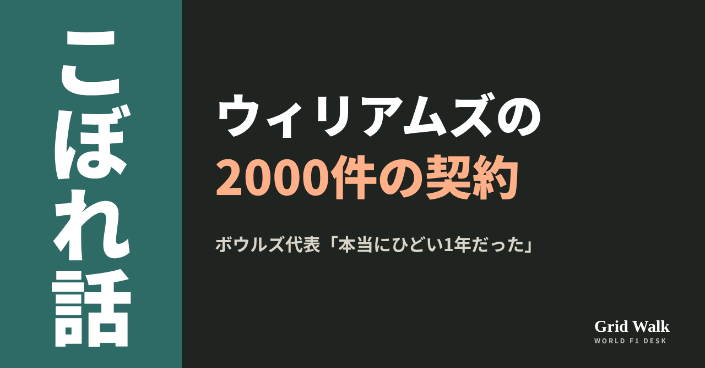
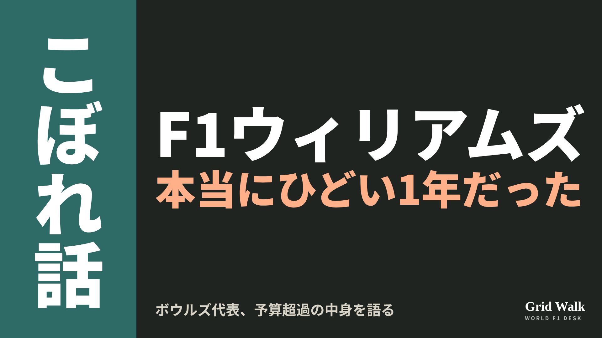
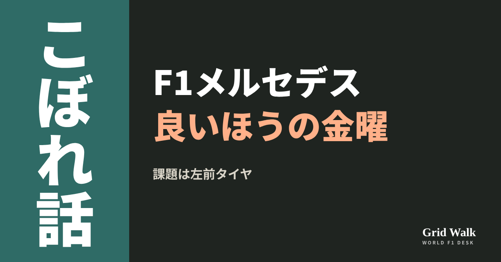
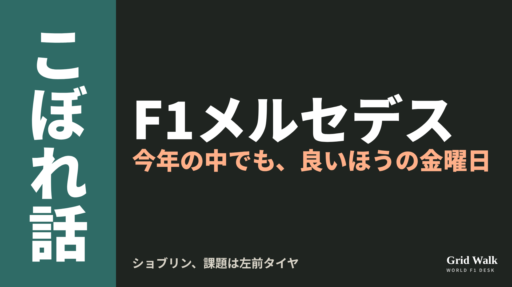
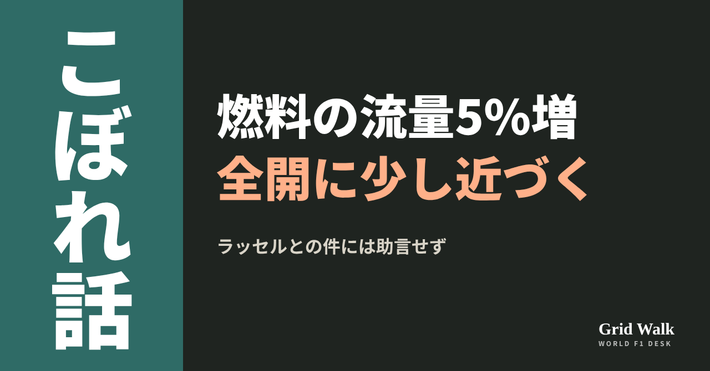
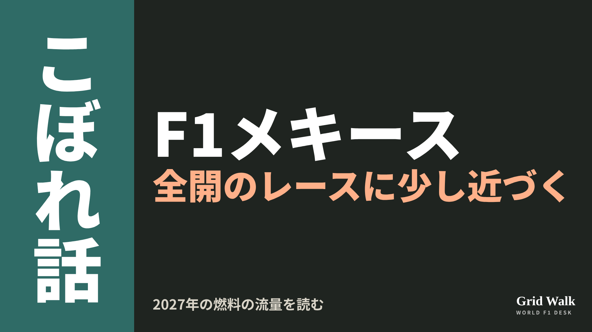
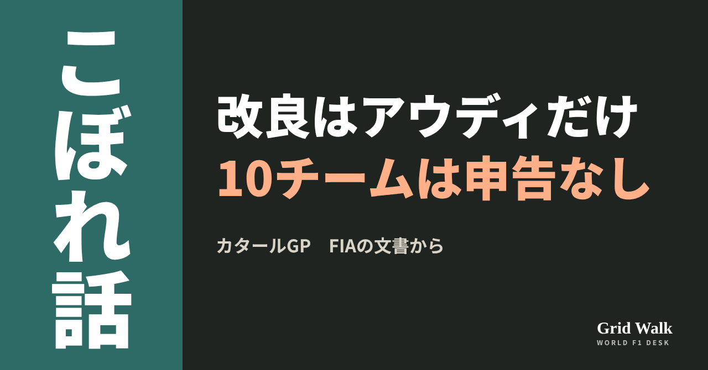
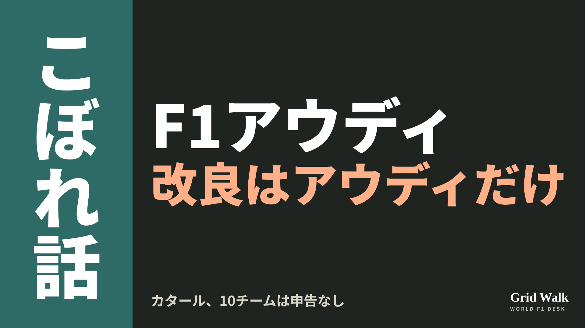

<meta charset="utf-8"><title>11/28夜のコラム note貼り付け</title>
<style>
/* one column of numbered paste steps; text steps vs image steps differ by marker */
:root{--bg:#F5F4F0;--card:#FFFFFF;--ink:#1D2321;--mute:#5F665F;--line:#DCDAD2;--btn:#1F5FBF;--btnok:#2E8B4F;--img:#E9F3EC;--imgink:#22663B;--sans:'IBM Plex Sans JP','Hiragino Sans','Noto Sans JP',sans-serif}
@media (prefers-color-scheme:dark){:root:not([data-theme="light"]){--bg:#171A19;--card:#202423;--ink:#ECEDE8;--mute:#A3AAA2;--line:#343937;--btn:#4D8BE6;--btnok:#3FA866;--img:#1E2C23;--imgink:#8FD3A6;color-scheme:dark}}
:root[data-theme="dark"]{--bg:#171A19;--card:#202423;--ink:#ECEDE8;--mute:#A3AAA2;--line:#343937;--btn:#4D8BE6;--btnok:#3FA866;--img:#1E2C23;--imgink:#8FD3A6;color-scheme:dark}
body{background:var(--bg);color:var(--ink);font-family:var(--sans);font-size:15px;line-height:1.75;padding:20px 16px 60px}
main{max-width:680px;margin:0 auto;display:grid;gap:28px}
header h1{font-size:22px;margin:0 0 6px;text-wrap:balance}
header p{margin:0;color:var(--mute);font-size:14px}
nav{display:flex;gap:8px;flex-wrap:wrap;margin-top:12px}
nav a{border:1px solid var(--line);border-radius:999px;padding:4px 14px;color:var(--ink);text-decoration:none;font-size:14px;background:var(--card)}
.part h2{font-size:18px;line-height:1.5;margin:0 0 12px;text-wrap:balance;display:flex;gap:10px;align-items:baseline;flex-wrap:wrap}
.tag{font-size:13px;background:var(--ink);color:var(--bg);border-radius:6px;padding:1px 9px}
.steps{list-style:none;margin:0;padding:0;display:grid;gap:12px}
.st{background:var(--card);border:1px solid var(--line);border-radius:12px;padding:12px;min-width:0}
.hd{display:flex;align-items:center;gap:8px;margin-bottom:8px}
.no{width:26px;height:26px;border-radius:50%;background:var(--btn);color:#fff;display:inline-flex;align-items:center;justify-content:center;font-size:13px;font-weight:700;flex:0 0 26px}
.im .no{background:var(--btnok)}
.hd em{font-style:normal;font-size:12px;background:var(--img);color:var(--imgink);border-radius:6px;padding:0 8px}
.bx{font-size:13.5px;line-height:1.7;border:1px solid var(--line);border-radius:8px;padding:8px 10px;max-height:110px;overflow:auto;overflow-wrap:anywhere}
.bx.tall{max-height:150px}.bx p{margin:0 0 6px}.bx h2{font-size:14px;margin:8px 0 4px}.bx a{color:var(--btn)}
.st img{display:block;width:100%;max-width:100%;border:1px solid var(--line);border-radius:8px}
.sub{font-size:12.5px;color:var(--mute);margin:6px 0 0}
.cp{width:100%;margin-top:8px;padding:12px;border:0;border-radius:10px;background:var(--btn);color:#fff;font:600 15px var(--sans);cursor:pointer}
.cp.ok{background:var(--btnok)}.cp.dl{background:var(--btnok)}.cp:focus-visible{outline:3px solid var(--ink);outline-offset:2px}
.xh{font-size:15px;margin:20px 0 10px}
.fb{font-size:13px;line-height:1.7;margin:8px 0 0;padding:8px 10px;border-radius:8px;background:var(--img);color:var(--imgink)}
.opts{display:grid;grid-template-columns:repeat(auto-fill,minmax(240px,1fr));gap:10px}
.opt{min-width:0}.opt img{display:block;width:100%;border:1px solid var(--line);border-radius:8px}
.ol{display:flex;align-items:center;gap:8px;margin-top:6px}.ol b{font-size:13px;flex:0 0 auto}.ol .on{font-size:12.5px;color:var(--mute);flex:1;min-width:0}.ol .cp{width:auto;flex:0 0 auto;padding:9px 14px}.ol .cp{margin:0;padding:9px}
.toast{font-size:13px;color:var(--mute);margin-top:6px}
</style>
<main><header><h1>11/28夜のコラム note貼り付け</h1><p>いま公開済みは4本です。青い番号は文章、緑は画像です。</p><nav><a href="#p1">1</a><a href="#p2">2</a><a href="#p3">3</a><a href="#p4">4</a></nav></header><section class="part" id="p1"><h2><span class="tag">OFF GRID</span>ボウルズ代表「本当にひどい1年だった」　予算超過の中身は契約の移し替え</h2><p class="sub">サイトに公開：19:38</p><ol class="steps">
<li class="st im"><div class="hd"><span class="no">1</span><b>見出し画像</b><em>画像</em></div><button class="cp dl" data-img="img/vowles-shocking-year-cost-cap-20261128.png" data-name="vowles-shocking-year-cost-cap-20261128_見出し画像.png">ダウンロード</button></li>
<li class="st"><div class="hd"><span class="no">2</span><b>タイトル</b></div><div class="bx" id="p1t">ボウルズ代表「本当にひどい1年だった」　予算超過の中身は契約の移し替え</div><button class="cp" data-plain="p1t">タイトルをコピー</button></li>
<li class="st"><div class="hd"><span class="no">3</span><b>本文</b></div><div class="bx tall" id="p1r"><p>カタールGPの金曜に開かれたFIAのチーム代表会見で、ウィリアムズのジェームズ・ボウルズ代表（ https://f1gridwalk.github.io/deep/rules/person-james-vowles/ ）は、2025年分の予算上限の超過について、ひとつずつ質問に答えました。今季をどう振り返るかと聞かれると、言葉を飾りませんでした。</p><p>FIAの決定の中身と、風洞・CFDの制限（ATR）のしくみはサイトで → <a href="https://f1gridwalk.github.io/lens/vowles-shocking-year-cost-cap-20261128/?utm_source=note&amp;utm_campaign=vowles-shocking-year-cost-cap-20261128">https://f1gridwalk.github.io/lens/vowles-shocking-year-cost-cap-20261128/?utm_source=note&amp;utm_campaign=vowles-shocking-year-cost-cap-20261128</a></p><blockquote><p>「いちばん厳しい1年だった。それは間違いない」「本当にひどい1年だった」「世界トップクラスのドライバーが2人いるのに、その力にふさわしいと言えるクルマに近いものさえ用意できていない」（ボウルズ代表、FIA公式／国際）</p></blockquote><p>FIAは11月25日、ウィリアムズに軽微な超過違反と手続き上の違反があったと発表しています。決定の中身は https://f1gridwalk.github.io/lens/cost-cap-2025-williams-alpine-20261126/ で紹介しました。会見では、その出どころを代表自身が説明しました。</p><h2>1977年から変わらなかった会社</h2><blockquote><p>「ウィリアムズの会社の組織は1977年からほとんど変わっておらず、今の時代には合っていなかった」「上限を超えた原因は組織の作り直しで、ご覧のとおり、60万ポンド超えた」（ボウルズ代表、FIA公式／国際）</p></blockquote><p>額は会見では60万ポンドでしたが、F1公式によると超過は62万7000ポンド（上限の0.48%）です。縦に一本だった組織の周りに、いくつもの会社を作ったといいます。</p><blockquote><p>「われわれの場合、さまざまな取引先などとの2000件近い契約を、ある会社から次の会社へ移さなければならなかった」「とてもつらく、長い作業だ」「その期間を乗り切るために、財務と法務の人員を増やさなければならなかった」（ボウルズ代表、FIA公式／国際）</p></blockquote><p>2026年にまた起きることはないかと聞かれると、一度きりの作り直しで、会社の組織を毎年作り直したりはしない、と答えています。</p><h2>契約の移し替えは上限の内か外か</h2><p>ウィリアムズは、組織の作り直しの費用は予算上限の外だと考えていました。FIAの解釈は次のとおりだと説明しています。</p><blockquote><p>「ある会社から次の会社へ契約を移したのだから、それはFIAにとっては実質的に調達で、上限に含まれる活動だ」「われわれは、財務と法務の活動だと定義した。文字どおり、契約書の名前を書き換えるだけだからだ」「FIAの解釈は理解できる。だから違反を受け入れた」（ボウルズ代表、FIA公式／国際）</p></blockquote><p>FIAと話し始めたのは3、4週間前で、超過の可能性を知らされたといいます。FIAはずっととても良い対応をしてくれた、とも話しました。上限に入らない費用の決まりは https://f1gridwalk.github.io/deep/rules/cost-cap-exclusions/ に、違反と罰のこれまでの例は https://f1gridwalk.github.io/deep/rules/cost-cap-breach/ にまとめています。</p><h2>順位の3分の1</h2><p>F1公式によると、罰は罰金と、今後12か月の風洞とCFDのテストを1.5%減らすことです。2027年に響かないかと聞かれ、ボウルズ代表は数字で答えました。</p><blockquote><p>「そうはならないと思う」「分かりやすく言うと、グリッドの1つの順位はATRの5%で、われわれの差は1.5%だ。つまり、1つの順位の3分の1にもならない」（ボウルズ代表、FIA公式／国際）</p></blockquote><p>ATRは、成績の悪いチームほど風洞とCFDを多く使える決まりです（ https://f1gridwalk.github.io/deep/rules/atr/ ）。ボウルズ代表は、来年は順位を上げたい、そうなれば15%ほどになるとし、全体から見れば小さなことだと続けました。F1公式の順位表では、ウィリアムズはラスベガスGPを終えて（11月28日時点）9位、16点です。</p><p>編集部としては、この会見でいちばん重いのは超過の額ではなく、規則が白黒はっきりしていないと代表自身が認めた点だと見ています。ボウルズ代表は、この1年を通らなければならない1年だったとも話しました。</p><p><strong>契約の名前を書き換える作業は、クルマを速くするための支出と言えるでしょうか。あなたは、FIAとウィリアムズのどちらの見方に近いですか？</strong></p><p>━━━━━━━━━━</p><p><strong>F1 Grid Walk では、世界のF1ニュースを毎日日本語でまとめています。</strong></p><p>海外の記事の要約を、毎日載せています。</p><p><a href="https://f1gridwalk.github.io/">https://f1gridwalk.github.io/</a></p><p>ほかの海外記事も読みたい方は、F1 Grid Walkへ。</p><p><a href="https://f1gridwalk.github.io/lens/vowles-shocking-year-cost-cap-20261128/">https://f1gridwalk.github.io/lens/vowles-shocking-year-cost-cap-20261128/</a></p><p>━━━━━━━━━━</p><p><a href="https://www.fia.com/news/f1-2026-qatar-grand-prix-friday-press-conference-transcript">出典：FIA（国際）</a></p><p><a href="https://www.formula1.com/en/latest/article/fia-confirm-williams-minor-overspend-breach-in-2025-cost-cap-review.12rGorQ1pzc6aH0LX2WdLZ">出典：F1公式サイト（イギリス）</a></p><p><a href="https://www.formula1.com/en/results/2026/team">出典：F1公式サイト（イギリス）</a></p></div><button class="cp" data-rich="p1r">本文をコピー</button></li>
<li class="st"><div class="hd"><span class="no">4</span><b>ハッシュタグ</b></div><div class="bx" id="p1h">#F1 #F1jp #ウィリアムズ #ボウルズ #予算上限 #コストキャップ #FIA #カタールGP #F1こぼれ話 #OFFGRID</div><button class="cp" data-plain="p1h">タグをコピー</button></li>
</ol><h3 class="xh">X</h3><ol class="steps">
<li class="st im"><div class="hd"><b>X用の画像</b><em>画像</em></div><button class="cp dl" data-img="img/x_vowles-shocking-year-cost-cap-20261128.png" data-name="x_vowles-shocking-year-cost-cap-20261128.png">ダウンロード</button></li>
<li class="st"><div class="hd"><b>① noteをシェアするときの文</b></div><div class="bx" id="p1x0">ウィリアムズのボウルズ代表「本当にひどい1年だった」。2025年分の予算超過は、会社の組織を作り直したときの約2000件の契約の移し替えが原因でした。FIAとの見方の違いをまとめました #F1jp #ウィリアムズ</div><button class="cp" data-plain="p1x0">コピー</button></li>
<li class="st"><div class="hd"><b>② ①への返信</b></div><div class="bx" id="p1x1">ほかの海外記事も読みたい方は、F1 Grid Walkへ。
https://f1gridwalk.github.io/lens/vowles-shocking-year-cost-cap-20261128/?utm_source=x&amp;utm_campaign=vowles-shocking-year-cost-cap-20261128</div><button class="cp" data-plain="p1x1">コピー</button></li>
<li class="st"><div class="hd"><b>③ ②への返信</b></div><div class="bx" id="p1x2">毎日の海外F1ニュースは、日本語でこちらにまとめています。
https://f1gridwalk.github.io/</div><button class="cp" data-plain="p1x2">コピー</button></li>
</ol></section><section class="part" id="p2"><h2><span class="tag">OFF GRID</span>ショブリン「今年の中でも、良いほうの金曜日になった」　課題は左前タイヤ</h2><p class="sub">サイトに公開：19:36</p><ol class="steps">
<li class="st im"><div class="hd"><span class="no">1</span><b>見出し画像</b><em>画像</em></div><button class="cp dl" data-img="img/shovlin-mercedes-better-friday-20261128.png" data-name="shovlin-mercedes-better-friday-20261128_見出し画像.png">ダウンロード</button></li>
<li class="st"><div class="hd"><span class="no">2</span><b>タイトル</b></div><div class="bx" id="p2t">ショブリン「今年の中でも、良いほうの金曜日になった」　課題は左前タイヤ</div><button class="cp" data-plain="p2t">タイトルをコピー</button></li>
<li class="st"><div class="hd"><span class="no">3</span><b>本文</b></div><div class="bx tall" id="p2r"><p>カタールGPの金曜、メルセデスはFP1・FP2ともにアンドレア・キミ・アントネッリが最速、ジョージ・ラッセルが2番手でした。チームの11月27日のリリースで、トラックサイド・エンジニアリング・ディレクターのアンドリュー・ショブリンはこう振り返っています。</p><p>ショブリンの人物ページ、ロングランとタイヤのコラム、元の発表へのリンクはサイトで → <a href="https://f1gridwalk.github.io/lens/shovlin-mercedes-better-friday-20261128/?utm_source=note&amp;utm_campaign=shovlin-mercedes-better-friday-20261128">https://f1gridwalk.github.io/lens/shovlin-mercedes-better-friday-20261128/?utm_source=note&amp;utm_campaign=shovlin-mercedes-better-friday-20261128</a></p><blockquote><p>「今年の中でも、良いほうの金曜日になった」（ショブリン、メルセデス公式／イギリス）</p></blockquote><p>FIAのFP2の公式結果（決定文書21）では、アントネッリが1分23秒077、ラッセルが0.127秒差。メルセデスは11月8日のサンパウロGPでコンストラクターズの王座を決めていて、残りは2戦です。</p><h2>2台の速さを引き出す役</h2><p>メルセデス公式の解説記事（ハミルトンとボッタスが走っていたころのもの）によると、当時この役目は、どの週末も2台からできるだけ多くの性能を引き出すこと。ガレージの両側のエンジニアや工場の性能グループと組み、片方の車で見つかった設定の良さをもう片方にも生かす仕事でした。今回のリリースでも肩書きは同じです。経歴は人物ページ https://f1gridwalk.github.io/deep/rules/person-andrew-shovlin/ で。</p><h2>赤旗の中で決めたこと</h2><p>金曜の話は具体的です。</p><blockquote><p>「車は最初からよく機能しているようで、ミディアムタイヤでは、ドライバーたちはかなり楽にラップタイムを出せていた」「FP1ではソフトタイヤを使い切れなかったが、それが2回目の走行に向けて役に立つ情報になった」（ショブリン、メルセデス公式／イギリス）</p></blockquote><p>2回の走行の間に大きな変更はせず、ラッセルは少し満足度が上がり、アントネッリは少し乗りにくくなったものの、2人ともペースは強く見えたといいます。FP2は赤旗で止まりながらの走行でした。</p><blockquote><p>「FP2では赤旗のせいで、2人ともソフトタイヤでの周回を終えられなかった。だから、ロングランの作業に取りかかることにした」（ショブリン、メルセデス公式／イギリス）</p></blockquote><p>予選を想定した1周より、決勝を想定した長い連続走行を選んだわけです。ロングランのしくみは https://f1gridwalk.github.io/deep/rules/long-run/ に、その速さの試算はコラム https://f1gridwalk.github.io/lens/antonelli-longrun-one-second-20261128/ にあります。</p><h2>左前タイヤは、どこも同じ悩み</h2><blockquote><p>「レースペースはまずまずに見えたし、役に立つ情報も集められた。とくに左前のタイヤについてで、このコースでは左前がかなりのエネルギーを受けている」「それはピットレーンのどこでも共通のテーマのようだ。夜のうちに少し調整して、週末の残りで状況を良くできればと思う」（ショブリン、メルセデス公式／イギリス）</p></blockquote><p>ドライバー2人の言葉です。</p><blockquote><p>「左前のタイヤがかなりのエネルギーを受けていて、それが週末を通して大事な要素になる」（アントネッリ、メルセデス公式／イギリス）</p></blockquote><blockquote><p>「FP1は少し難しくて、車に完全には満足できなかった。でもFP2に向けて良い変更をして、夜の走行の最初の周から、ずっと良く感じられた」（ラッセル、メルセデス公式／イギリス）</p></blockquote><p>リリースは、夜の走行ではマクラーレン、レッドブルと3チームが0.5秒以内だったとも書いています。FIAの結果では、3番手のランド・ノリス（マクラーレン）から5番手のマックス・フェルスタッペン（レッドブル）までが0.445〜0.499秒差。タイヤの厳しさはコラム https://f1gridwalk.github.io/lens/pirelli-qatar-most-demanding-20261128/ で。</p><p>編集部としては、ショブリンが左前の問題をメルセデスだけのものではないと見ている点が大事だと見ています。どのチームも同じ悩みなら、差を分けるのは夜のうちの調整になりそうです。答えは、日本時間29日3時の予選と30日1時の決勝で出ます。</p><p><strong>今年の中でも良いほうの金曜を終えたメルセデス。予選でも、マクラーレンとレッドブルを抑えられると思いますか？</strong></p><p>━━━━━━━━━━</p><p><strong>F1 Grid Walk では、世界のF1ニュースを毎日日本語でまとめています。</strong></p><p>海外の記事の要約を、毎日載せています。</p><p><a href="https://f1gridwalk.github.io/">https://f1gridwalk.github.io/</a></p><p>ほかの海外記事も読みたい方は、F1 Grid Walkへ。</p><p><a href="https://f1gridwalk.github.io/lens/shovlin-mercedes-better-friday-20261128/">https://f1gridwalk.github.io/lens/shovlin-mercedes-better-friday-20261128/</a></p><p>━━━━━━━━━━</p><p><a href="https://www.mercedesamgf1.com/news/encouraging-friday-under-the-lusail-lights">出典：メルセデス公式（イギリス）</a></p><p><a href="https://mercedesamgf1.com/news/insight-the-trackside-engineers">出典：メルセデス公式（イギリス）</a></p><p><a href="https://www.fia.com/system/files/decision-document/2026_qatar_grand_prix_-_free_practice_2_classification.pdf">出典：FIA（国際）</a></p><p><a href="https://www.formula1.com/en/latest/article/rivals-congratulate-mercedes-on-2026-constructors-championship-after-sao-paulo-gp.5mQ3BkVs5HLP8LE8PduoWY">出典：F1公式サイト（イギリス）</a></p><p><a href="https://www.formula1.com/en/racing/2026">出典：F1公式サイト（イギリス）</a></p></div><button class="cp" data-rich="p2r">本文をコピー</button></li>
<li class="st"><div class="hd"><span class="no">4</span><b>ハッシュタグ</b></div><div class="bx" id="p2h">#F1 #F1jp #カタールGP #メルセデス #ショブリン #アントネッリ #ラッセル #タイヤ #F1こぼれ話 #OFFGRID</div><button class="cp" data-plain="p2h">タグをコピー</button></li>
</ol><h3 class="xh">X</h3><ol class="steps">
<li class="st im"><div class="hd"><b>X用の画像</b><em>画像</em></div><button class="cp dl" data-img="img/x_shovlin-mercedes-better-friday-20261128.png" data-name="x_shovlin-mercedes-better-friday-20261128.png">ダウンロード</button></li>
<li class="st"><div class="hd"><b>① noteをシェアするときの文</b></div><div class="bx" id="p2x0">メルセデスの技術責任者ショブリン、カタールの金曜は「今年の中でも、良いほうの金曜日になった」。それでも課題は左前タイヤ。現場の仕事から読みました #F1jp #メルセデス</div><button class="cp" data-plain="p2x0">コピー</button></li>
<li class="st"><div class="hd"><b>② ①への返信</b></div><div class="bx" id="p2x1">ほかの海外記事も読みたい方は、F1 Grid Walkへ。
https://f1gridwalk.github.io/lens/shovlin-mercedes-better-friday-20261128/?utm_source=x&amp;utm_campaign=shovlin-mercedes-better-friday-20261128</div><button class="cp" data-plain="p2x1">コピー</button></li>
<li class="st"><div class="hd"><b>③ ②への返信</b></div><div class="bx" id="p2x2">毎日の海外F1ニュースは、日本語でこちらにまとめています。
https://f1gridwalk.github.io/</div><button class="cp" data-plain="p2x2">コピー</button></li>
</ol></section><section class="part" id="p3"><h2><span class="tag">OFF GRID</span>メキース「全開のレースに少し近づく」　2027年の燃料の流量を読む</h2><p class="sub">サイトに公開：19:34</p><ol class="steps">
<li class="st im"><div class="hd"><span class="no">1</span><b>見出し画像</b><em>画像</em></div><button class="cp dl" data-img="img/mekies-2027-fuel-flow-flat-out-20261128.png" data-name="mekies-2027-fuel-flow-flat-out-20261128_見出し画像.png">ダウンロード</button></li>
<li class="st"><div class="hd"><span class="no">2</span><b>タイトル</b></div><div class="bx" id="p3t">メキース「全開のレースに少し近づく」　2027年の燃料の流量を読む</div><button class="cp" data-plain="p3t">タイトルをコピー</button></li>
<li class="st"><div class="hd"><span class="no">3</span><b>本文</b></div><div class="bx tall" id="p3r"><p>ラスベガスのようにエネルギーが足りないコースほど、レースが面白くなることがある。では来年、燃料の流量が増えたら、ああいうレースはなくなるのか。カタールGPの金曜日、FIAのチーム代表会見で、イギリスのThe Raceの記者がこう聞きました。質問は、来年の燃料の流量と過給圧の引き上げを挙げています。ウィリアムズのボウルズ代表に続いて、レッドブルのローレン・メキース代表が答えました。FIAの会見の書き起こしによると、こうです。</p><p>FIAの会見の書き起こしへのリンクと、燃料の流量や2027年の規則の用語解説はサイトで → <a href="https://f1gridwalk.github.io/lens/mekies-2027-fuel-flow-flat-out-20261128/?utm_source=note&amp;utm_campaign=mekies-2027-fuel-flow-flat-out-20261128">https://f1gridwalk.github.io/lens/mekies-2027-fuel-flow-flat-out-20261128/?utm_source=note&amp;utm_campaign=mekies-2027-fuel-flow-flat-out-20261128</a></p><blockquote><p>「いや、技術的には、燃料の流量が5%増えても、レースでいいバトルを生んでいるものの性質は変わらないと考えている」「だから、エネルギーのマネジメントで面白い駆け引きをする余地は、これからも残ると思う」（メキース、FIAの会見の書き起こし）</p></blockquote><blockquote><p>「でも、願わくは、そしてほぼ確実に、全開の予選や全開のレースに少し近づく。そして2028年には、同じ方向にもう一歩進む」（同）</p></blockquote><p>フェルスタッペンを車の中で最高のセンサーと呼んだのは、同じ会見の別の質問への答えで、OFF GRID https://f1gridwalk.github.io/lens/mekies-verstappen-amplifier-20261128/ で紹介しました。</p><h2>2027年は5%、2028年は13%</h2><p>数字を確かめておきます。F1公式の6月10日の記事の表によると、燃料の流量の引き上げ幅は2027年が5%、2028年が13%です。内燃エンジンの最大出力は400kWから、2027年に420kW、2028年に450kWに上がります。FIAは同じ日の発表で、狙いは予選をもっと全開にすることで、新しい規則が生んだレースの良さは損なわないようにすると説明しました。変更は6月23日にFIAの世界モータースポーツ評議会が承認しています（F1公式）。燃料の流量の決まりは https://f1gridwalk.github.io/deep/rules/fuel-flow/ 、2027年の変更の全体は https://f1gridwalk.github.io/deep/rules/regulations-2027/ で。</p><blockquote><p>「今年見てきたバトルの増加がなくなるとは思わない。私たちのほとんどが楽しんでいるものだ」「でも、バランスはまた全開のレースのほうへ動く」（メキース、FIAの会見の書き起こし）</p></blockquote><p>メキースの答えは、FIAの狙いとほぼ重なります。駆け引きは残し、全開で走れる時間を少しずつ増やす。その一歩目が2027年の5%です。</p><h2>ラッセルとの件には助言せず</h2><p>同じ会見で、イギリスのスカイスポーツの記者は、ラスベガスで再燃したジョージ・ラッセルとの確執を取り上げました。メキースは本人に何か助言したのか。自分がほかの誰よりも上だと思っている、という批判から本人を守るか、と聞いています。</p><blockquote><p>「まず、助言はしていない。彼には、本当に助言なんていらないと思う」「マックスは毎日、毎周、車の中でも外でも1000%で戦っている。チームとしては、ある意味それに慣れている」（メキース、FIAの会見の書き起こし）</p></blockquote><blockquote><p>「それが、彼をあれほど競争力があって力のあるドライバーにしているものの一部なのは間違いない。それを変えたいと思うかどうかは分からないね」（同）</p></blockquote><p>ラスベガスでの2人の言葉は https://f1gridwalk.github.io/lens/verstappen-russell-far-below-20261123/ で。チームメイトのアイザック・ハジャーについても聞かれ、メキースは成長をほめました。F1公式の結果では、ハジャーはラスベガスで15位（10秒加算）でした。</p><blockquote><p>「アイザックは毎戦、速く、もっと速くなっている」「車の中で感情を抑えて、落ち着いていられるように、ずいぶん努力してきた」（同）</p></blockquote><p>メキースの人物ページは https://f1gridwalk.github.io/deep/rules/person-laurent-mekies/ で。編集部としては、2027年に全開で走れる時間が増えれば、毎周1000%で戦うドライバーの強みが、いまより表に出やすくなるかもしれないと見ています。</p><p><strong>2027年、燃料の流量が5%増えて、全開の走りに少し近づきます。ラスベガスのような駆け引きのレースと全開の勝負、あなたはどちらが見たいですか？</strong></p><p>━━━━━━━━━━</p><p><strong>F1 Grid Walk では、世界のF1ニュースを毎日日本語でまとめています。</strong></p><p>海外の記事の要約を、毎日載せています。</p><p><a href="https://f1gridwalk.github.io/">https://f1gridwalk.github.io/</a></p><p>ほかの海外記事も読みたい方は、F1 Grid Walkへ。</p><p><a href="https://f1gridwalk.github.io/lens/mekies-2027-fuel-flow-flat-out-20261128/">https://f1gridwalk.github.io/lens/mekies-2027-fuel-flow-flat-out-20261128/</a></p><p>━━━━━━━━━━</p><p><a href="https://www.fia.com/news/f1-2026-qatar-grand-prix-friday-press-conference-transcript">出典：FIA（国際）</a></p><p><a href="https://www.formula1.com/en/latest/article/agreement-reached-on-proposed-f1-regulatory-changes-for-2027-and-2028.dlv3dZcWoXsXGbhw2WWyb">出典：F1公式サイト（イギリス）</a></p><p><a href="https://api.fia.com/news/agreement-reached-proposed-regulatory-changes-2027-and-2028">出典：FIA（国際）</a></p><p><a href="https://www.formula1.com/en/latest/article/fias-wmsc-ratifies-f1-regulatory-changes-for-2027-and-2028.ACyRcPvBKo8LRiOleCSJU">出典：F1公式サイト（イギリス）</a></p><p><a href="https://www.formula1.com/en/results/2026/races/1300/las-vegas/race-result">出典：F1公式サイト（イギリス）</a></p></div><button class="cp" data-rich="p3r">本文をコピー</button></li>
<li class="st"><div class="hd"><span class="no">4</span><b>ハッシュタグ</b></div><div class="bx" id="p3h">#F1 #F1jp #レッドブル #メキース #フェルスタッペン #ラッセル #ハジャー #燃料流量 #2027年 #カタールGP #F1こぼれ話 #OFFGRID</div><button class="cp" data-plain="p3h">タグをコピー</button></li>
</ol><h3 class="xh">X</h3><ol class="steps">
<li class="st im"><div class="hd"><b>X用の画像</b><em>画像</em></div><button class="cp dl" data-img="img/x_mekies-2027-fuel-flow-flat-out-20261128.png" data-name="x_mekies-2027-fuel-flow-flat-out-20261128.png">ダウンロード</button></li>
<li class="st"><div class="hd"><b>① noteをシェアするときの文</b></div><div class="bx" id="p3x0">2027年は燃料の流量が引き上げられます。レッドブルのメキース代表は「全開のレースに少し近づく」と読みました。来季の走り方の変化をまとめました #F1jp #レッドブル</div><button class="cp" data-plain="p3x0">コピー</button></li>
<li class="st"><div class="hd"><b>② ①への返信</b></div><div class="bx" id="p3x1">ほかの海外記事も読みたい方は、F1 Grid Walkへ。
https://f1gridwalk.github.io/lens/mekies-2027-fuel-flow-flat-out-20261128/?utm_source=x&amp;utm_campaign=mekies-2027-fuel-flow-flat-out-20261128</div><button class="cp" data-plain="p3x1">コピー</button></li>
<li class="st"><div class="hd"><b>③ ②への返信</b></div><div class="bx" id="p3x2">毎日の海外F1ニュースは、日本語でこちらにまとめています。
https://f1gridwalk.github.io/</div><button class="cp" data-plain="p3x2">コピー</button></li>
</ol></section><section class="part" id="p4"><h2><span class="tag">OFF GRID</span>カタールに改良を持ち込んだのはアウディだけ　10チームは申告なし</h2><p class="sub">サイトに公開：19:32</p><ol class="steps">
<li class="st im"><div class="hd"><span class="no">1</span><b>見出し画像</b><em>画像</em></div><button class="cp dl" data-img="img/audi-only-upgrade-qatar-20261128.png" data-name="audi-only-upgrade-qatar-20261128_見出し画像.png">ダウンロード</button></li>
<li class="st"><div class="hd"><span class="no">2</span><b>タイトル</b></div><div class="bx" id="p4t">カタールに改良を持ち込んだのはアウディだけ　10チームは申告なし</div><button class="cp" data-plain="p4t">タイトルをコピー</button></li>
<li class="st"><div class="hd"><span class="no">3</span><b>本文</b></div><div class="bx tall" id="p4r"><p>第22戦カタールGPに新しい部品を持ち込んだのは、11チームのうちアウディだけでした。FIAが11月27日（現地）に公表した文書（Doc 12）では、ほかの10チームの欄はどれも申告なしです。サイトの要約は https://f1gridwalk.github.io/news/en-planetf1-qatar-upgrades-audi-only/ にあります。</p><p>FIAの文書の訳と、アウディとハースの7位争いの中身はサイトで → <a href="https://f1gridwalk.github.io/lens/audi-only-upgrade-qatar-20261128/?utm_source=note&amp;utm_campaign=audi-only-upgrade-qatar-20261128">https://f1gridwalk.github.io/lens/audi-only-upgrade-qatar-20261128/?utm_source=note&amp;utm_campaign=audi-only-upgrade-qatar-20261128</a></p><h2>前のブレーキダクトの下の小さな板</h2><p>この文書は、チームごとに、更新した部品、更新の主な理由、前の仕様との形の違い、どう働くかの短い説明を表にしたものです（届け出の仕組みはルールブック https://f1gridwalk.github.io/deep/rules/car-presentation/ ）。アウディの欄は1行だけでした。部品は前輪まわり、理由は性能向上のうちの流れの整え方、形の違いは前のブレーキダクトのディフレクターの更新です。説明の文はこうです。</p><blockquote><p>「改めた前のブレーキダクトの下側のディフレクターは、車の外形の全体にわたって、車のほかの部分に送る流れの質を高める」（アウディ、FIA Doc 12／国際）</p></blockquote><p>ブレーキダクトはブレーキを冷やす空気の通り道で、まわりの小さな部品で前輪のうしろの空気の流れも変えられます（ルールブック https://f1gridwalk.github.io/deep/rules/brake-ducts/ ）。アウディの車体と空力の開発全体は、スイスのヒンウィルでテクニカルディレクターのジェームス・キーが率いています（人物ページ https://f1gridwalk.github.io/deep/rules/person-james-key/ ）。文書に部品の担当者の名前はありません。</p><p>アウディは前戦ラスベガスでも、うしろのブレーキダクトのディフレクターを改めていました。オランダのGPblogによると、そちらはコース専用の空気抵抗を減らす策という区分でした。ラスベガスで届け出がなかったのは、ウィリアムズ、アストンマーティン、アルピーヌ、キャデラックの4チームです。ラスベガスはコースに合わせた調整、カタールは性能向上と、区分が分かれています。</p><h2>シーズンの終わりは届け出が減る</h2><p>2025年のカタールGPの同じ文書でも、届け出たのはレーシングブルズだけで、中身はコースのバランスに合わせて前のウイングのフラップに付けられるようにしたガーニー（小さな縁の板）でした。最終戦アブダビGPの文書では、10チームすべてが届け出なしです。終盤の改良の考え方は、DEEP GRID https://f1gridwalk.github.io/deep/late-season-upgrades/ で読み解いています。</p><p>順位は、来年の開発の量にも関わります。FIAの運用規則（F4.6.1）では、1年を6つに分けた空力テストの期間のうち、最初の3つの風洞とCFDの量を、前の年のコンストラクターズの最終順位で決めます。7位は基準の100％、8位は105％です（ルールブック https://f1gridwalk.github.io/deep/rules/atr/ ）。最初の3つの期間は、1月1日から6月下旬までです（期間の長さから編集部が計算）。この仕組みのままなら、7位に上がると2027年の1〜6月の空力テストは少し減ることになります。</p><h2>3点差の7位争い</h2><p>F1公式の順位表では、ラスベガスGPを終えて、ハースが31点で7位、アウディが28点で8位です。FIAのFP2の結果では、ガブリエル・ボルトレートが11番手（1分24秒614、34周）、ニコ・ヒュルケンベルグが13番手（1分24秒871、25周）。ボルトレートは、10番手のアービッド・リンドブラッド（レーシングブルズ）と0.067秒差でした。ハースは2台とも17・18番手です。7位争いの中身は https://f1gridwalk.github.io/lens/haas-audi-seventh-place-20261125/ で、ハースの金曜は https://f1gridwalk.github.io/lens/komatsu-haas-limitation-qatar-20261128/ で紹介しています。</p><p>10チームが新しい部品を見送った週末に、アウディだけが性能向上の区分で部品を出しました。ただ、入れた理由や、どれだけ効いたかは、文書には書かれていません。予選は日本時間11月29日3時、決勝は30日1時です。</p><p><strong>残り2戦のために新しい部品を作るか、その力を来年の車に回すか。あなたがチームの技術の責任者なら、どちらを選びますか？</strong></p><p>━━━━━━━━━━</p><p><strong>F1 Grid Walk では、世界のF1ニュースを毎日日本語でまとめています。</strong></p><p>海外の記事の要約を、毎日載せています。</p><p><a href="https://f1gridwalk.github.io/">https://f1gridwalk.github.io/</a></p><p>ほかの海外記事も読みたい方は、F1 Grid Walkへ。</p><p><a href="https://f1gridwalk.github.io/lens/audi-only-upgrade-qatar-20261128/">https://f1gridwalk.github.io/lens/audi-only-upgrade-qatar-20261128/</a></p><p>━━━━━━━━━━</p><p><a href="https://www.fia.com/system/files/decision-document/2026_qatar_grand_prix_-_car_presentation_submissions.pdf">出典：FIA（国際）</a></p><p><a href="https://www.fia.com/system/files/decision-document/2026_qatar_grand_prix_-_free_practice_2_classification.pdf">出典：FIA（国際）</a></p><p><a href="https://www.gpblog.com/en/news/mercedes-brings-biggest-las-vegas-upgrade-package-alongside-engine-boost">出典：GPblog（オランダ）</a></p><p><a href="https://www.fia.com/system/files/decision-document/2025_qatar_grand_prix_-_car_presentation_submissions.pdf">出典：FIA（国際）</a></p><p><a href="https://www.fia.com/system/files/decision-document/2025_abu_dhabi_grand_prix_-_car_presentation_submissions.pdf">出典：FIA（国際）</a></p><p><a href="https://api.fia.com/system/files/documents/fia_2026_f1_regulations_-_section_f_operational_-_iss_09_-_2026-06-25.pdf">出典：FIA（国際）</a></p><p><a href="https://www.formula1.com/en/results/2026/team">出典：F1公式サイト（イギリス）</a></p></div><button class="cp" data-rich="p4r">本文をコピー</button></li>
<li class="st"><div class="hd"><span class="no">4</span><b>ハッシュタグ</b></div><div class="bx" id="p4h">#F1 #F1jp #アウディ #カタールGP #アップデート #ブレーキダクト #ハース #コンストラクターズ #F1こぼれ話 #OFFGRID</div><button class="cp" data-plain="p4h">タグをコピー</button></li>
</ol><h3 class="xh">X</h3><ol class="steps">
<li class="st im"><div class="hd"><b>X用の画像</b><em>画像</em></div><button class="cp dl" data-img="img/x_audi-only-upgrade-qatar-20261128.png" data-name="x_audi-only-upgrade-qatar-20261128.png">ダウンロード</button></li>
<li class="st"><div class="hd"><b>① noteをシェアするときの文</b></div><div class="bx" id="p4x0">カタールGPに改良を申告したのは11チームでアウディだけ。前のブレーキダクトの新部品です。FIAの書類から、最終盤の各チームの判断を見ました #F1jp #アウディ</div><button class="cp" data-plain="p4x0">コピー</button></li>
<li class="st"><div class="hd"><b>② ①への返信</b></div><div class="bx" id="p4x1">ほかの海外記事も読みたい方は、F1 Grid Walkへ。
https://f1gridwalk.github.io/lens/audi-only-upgrade-qatar-20261128/?utm_source=x&amp;utm_campaign=audi-only-upgrade-qatar-20261128</div><button class="cp" data-plain="p4x1">コピー</button></li>
<li class="st"><div class="hd"><b>③ ②への返信</b></div><div class="bx" id="p4x2">毎日の海外F1ニュースは、日本語でこちらにまとめています。
https://f1gridwalk.github.io/</div><button class="cp" data-plain="p4x2">コピー</button></li>
</ol></section></main><script>
function done(b,msg){const t=b.dataset.t||b.textContent;b.dataset.t=t;b.classList.add('ok');b.textContent=msg||'コピーしました';setTimeout(()=>{b.classList.remove('ok');b.textContent=t},2000)}
function selectEl(el){const r=document.createRange();r.selectNodeContents(el);const s=getSelection();s.removeAllRanges();s.addRange(r)}
async function rich(el,b){
  try{await navigator.clipboard.write([new ClipboardItem({'text/html':new Blob([el.innerHTML],{type:'text/html'}),'text/plain':new Blob([el.innerText],{type:'text/plain'})})]);done(b);return}catch(e){}
  selectEl(el);let ok=false;try{ok=document.execCommand('copy')}catch(e){}
  if(ok){getSelection().removeAllRanges();done(b)}else{done(b,'選択しました。コピーしてください')}}
async function plain(el,b){
  try{await navigator.clipboard.writeText(el.innerText);done(b);return}catch(e){}
  selectEl(el);let ok=false;try{ok=document.execCommand('copy')}catch(e){}
  if(ok){getSelection().removeAllRanges();done(b)}else{done(b,'選択しました。コピーしてください')}}
let dlns=null;(async()=>{try{dlns=await window.claude?.use?.("downloads")}catch(e){dlns=null}})();
async function img(src,b){
  b.dataset.t=b.dataset.t||b.textContent;
  if(!dlns){try{dlns=await window.claude?.use?.("downloads")}catch(e){}}
  if(!dlns){b.textContent='ダウンロードできませんでした';setTimeout(()=>{b.textContent=b.dataset.t},3500);return}
  try{const blob=await fetch(src).then(r=>r.blob());b.textContent='保存の確認を開いています…';
    await dlns.save({filename:b.dataset.name,data:blob});done(b,'ダウンロードしました')}
  catch(e){const c=e&&e.code;b.textContent=c==='declined'?'キャンセルしました':c==='rate_limited'?'少し待ってからもう一度押してください':'ダウンロードできませんでした';setTimeout(()=>{b.textContent=b.dataset.t},3500)}}
document.querySelectorAll('.cp').forEach(b=>b.addEventListener('click',()=>{
  if(b.dataset.rich)rich(document.getElementById(b.dataset.rich),b);
  else if(b.dataset.plain)plain(document.getElementById(b.dataset.plain),b);
  else img(b.dataset.img,b)}));
</script>